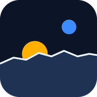

Lunar Horizon
Plan Moon south-pole landings by sunlight and Earth contact.
Android
Starting the download. If nothing happens, tap the button below.
Open in Chrome- If Chrome warns that the file might be harmful, tap Download anyway (it is not from the Play Store, so Android always warns).
- Open the downloaded lunar-horizon.apk.
- If Android asks, allow your browser to install unknown apps, then tap Install. If Play Protect asks, tap More details, then Install anyway.
iPhone and iPad
Lunar Horizon runs in the browser and can sit on your home screen like an app.
- This page is open inside another app. Tap the … (or compass) button and choose Open in Safari, or copy the link below and paste it into Safari.
- Tap Open Lunar Horizon below.
- Open it from its new icon.
Get the app
On an iPhone or iPad, open the web app in Safari and use Share, then Add to Home Screen.